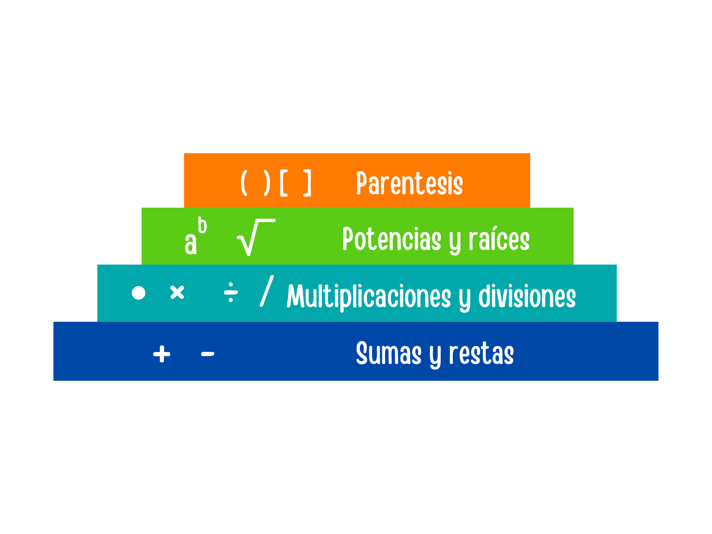

Dentro de las operaciones básicas de la aritmética existe una jerarquía de operaciones, es decir un orden. Es una regla que estipula el orden en que deben ser ejecutadas las operaciones en una expresión numérica, con operaciones múltiples. La operación de suma, resta, multiplicación y división tienen el siguiente orden: primero se deben ejecutar las operaciones agrupadas en paréntesis, luego las potencias y raíces, en el tercer lugar las multiplicaciones y divisiones en orden de aparición y finalmente las sumas y restas.

Video explicando el tema